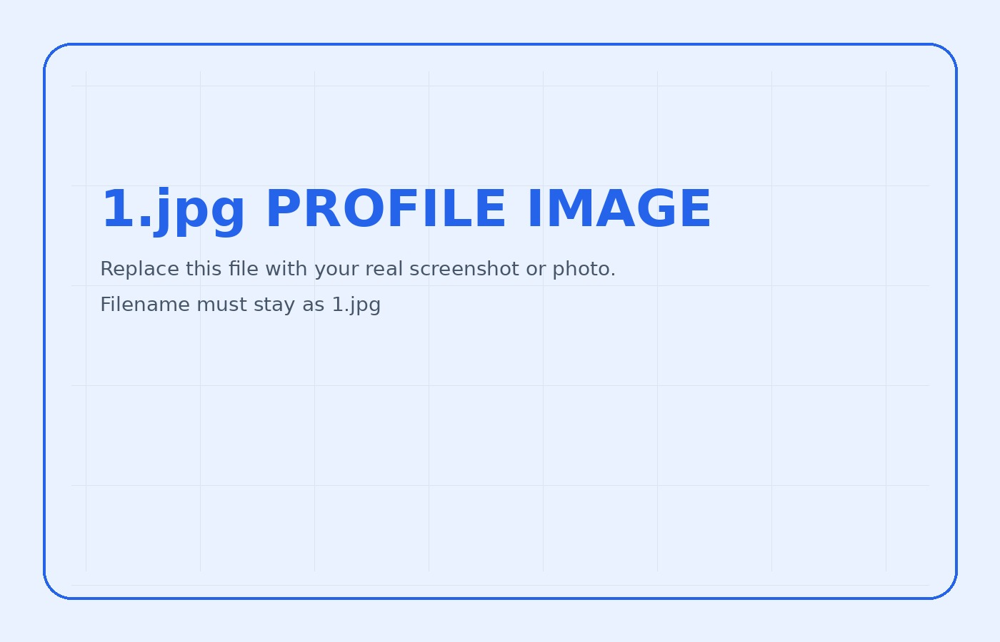

사용자 중심 설계
시각장애인 대상 영상통화 서비스 VODA에서 실제 사용자 피드백과 스크린리더 환경을 반영해 인터페이스를 설계했습니다.

시각장애인 대상 영상통화 서비스 VODA에서 실제 사용자 피드백과 스크린리더 환경을 반영해 인터페이스를 설계했습니다.
Atomic Design, 공통 컴포넌트, 패턴 기반 설계를 통해 반복 작업을 줄이고 유지보수성을 높였습니다.
HARUMAN과 Open The Door에서는 기능 구현을 넘어 사용 흐름과 서비스 설계 관점까지 함께 고민했습니다.
접근성과 사용자 경험을 가장 강하게 보여주는 대표 프로젝트
데이터 시각화와 서비스 기획 경험을 담은 금융 도메인 프로젝트
성능, 구조화, 예약 UX를 고민한 모바일 플랫폼 프로젝트